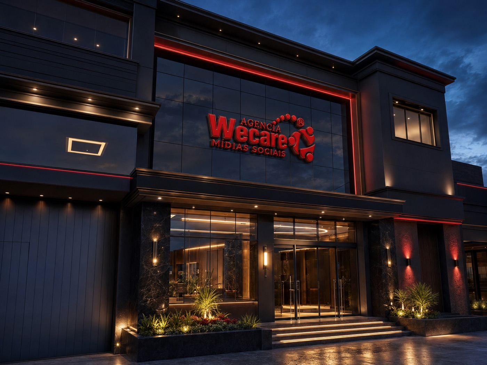
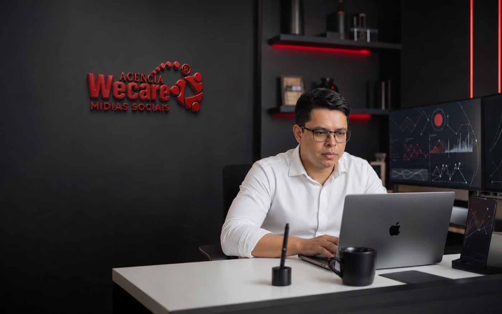
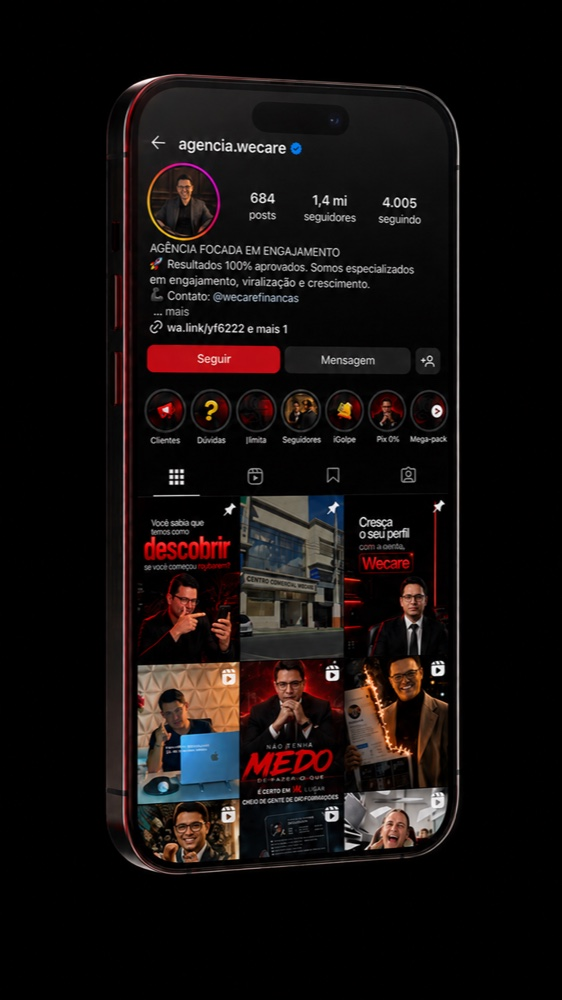
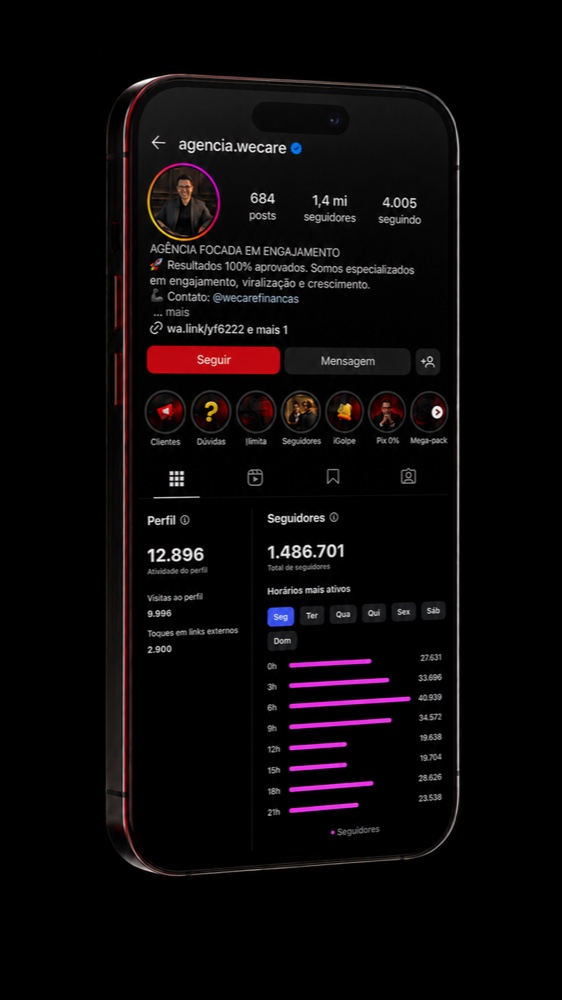
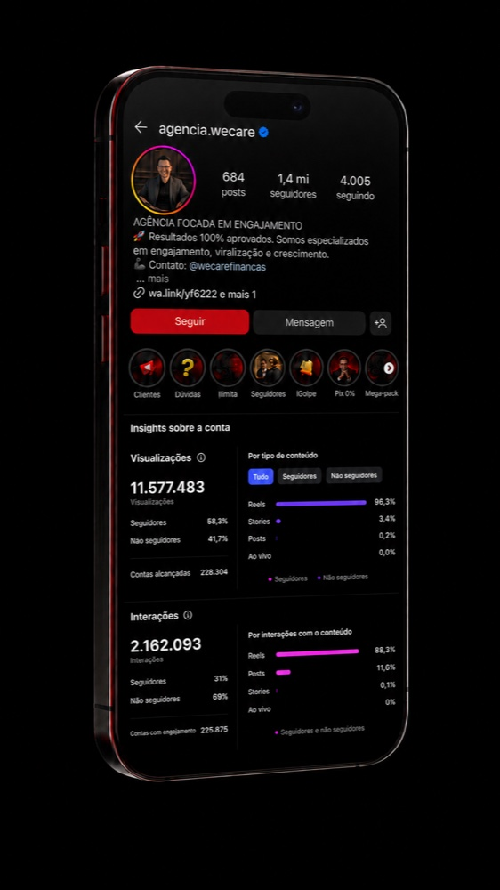
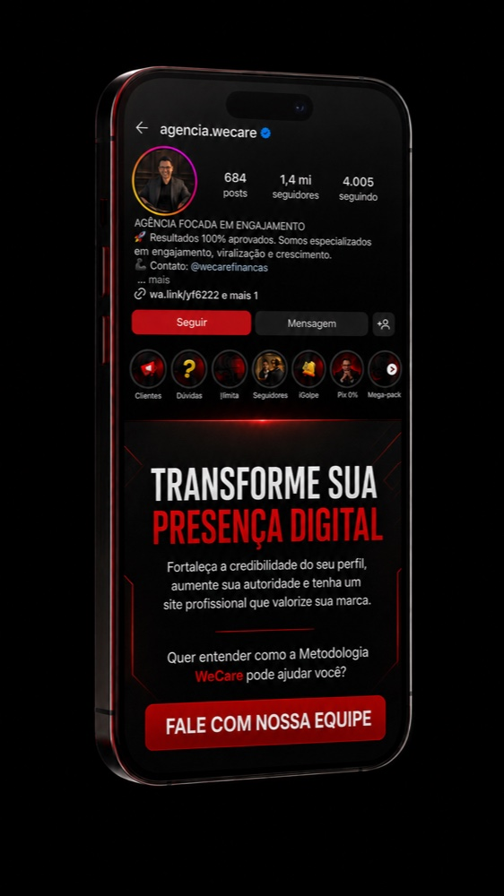
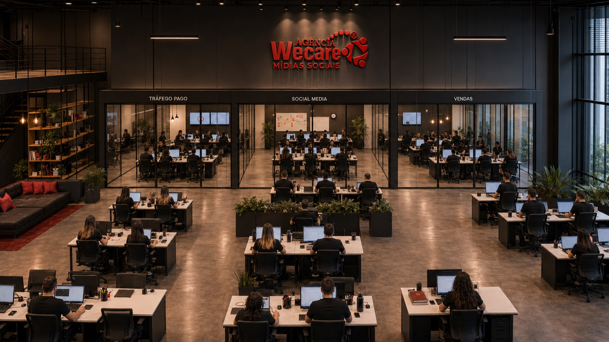

Agência WeCare, Mídias Sociais
10 anos transformando presença digital em alcance, autoridade e crescimento.
A Agência WeCare desenvolveu uma metodologia própria para fortalecer marcas, profissionais e empresas nas redes sociais por meio de estratégia, experiência e resultados comprovados.
Resultados próprios que comprovam aquilo que aplicamos em nossos clientes.

A WeCare
Experiência construída dentro de um mercado que muda todos os dias.
Há 10 anos, a Agência WeCare acompanha de perto as transformações das redes sociais, estudando o comportamento das plataformas, testando formatos e ajustando processos a cada mudança do mercado.
Nesse percurso, a empresa se especializou em crescimento, engajamento, alcance, distribuição de conteúdo, construção de autoridade e fortalecimento de presença digital. Não trabalhamos com números isolados: aplicamos estratégia, experiência e acompanhamento humano em cada projeto.
Foi essa experiência acumulada, sessão após sessão, cliente após cliente, que permitiu transformar conhecimento prático em um processo próprio, a Metodologia WeCare.

Como funciona
Metodologia WeCare
A Metodologia WeCare é 100% focada no crescimento viral. Aplicamos 10 anos de experiência e estratégias próprias para tornar seu perfil mais profissional, ampliar sua visibilidade e fortalecer sua autoridade no Instagram.
Quer entender melhor como funciona? Agende uma ligação ou videochamada com nossa equipe.
Agendar conversaDiagnóstico
Compreensão do perfil, do posicionamento, do momento atual e dos objetivos do cliente.
Estratégia
Definição das ações mais adequadas para ampliar presença, alcance, engajamento e autoridade.
Execução
Aplicação gradual, organizada e acompanhada das estratégias definidas.
Acompanhamento
Observação dos resultados, suporte humano e evolução contínua da estratégia.

O que fortalecemos
O que fortalecemos nas redes sociais
Instagram · TikTok · YouTube · Facebook · Kwai
Cada perfil possui um momento, um público e um objetivo. Por isso, a estratégia precisa ser analisada e construída de maneira personalizada.
Resultados
Não falamos sobre alcance apenas na teoria.
Os próprios canais da Agência WeCare demonstram a capacidade da nossa metodologia de alcançar novos públicos, gerar interação e movimentar uma comunidade ao redor da marca.




69% das interações apresentadas vieram de pessoas que ainda não seguiam o perfil.
Esse dado demonstra a capacidade da nossa metodologia de descobrir e expandir o alcance para novos públicos, além da base já existente.
O CEO
Uma empresa construída com presença, experiência e visão.
Leudair Vinter de Farias é CEO da Agência WeCare e a principal autoridade por trás da Metodologia WeCare. Ao longo de 10 anos de atuação, acompanhou de perto as transformações das redes sociais, desenvolveu estratégias, liderou operações e transformou experiência prática em uma metodologia própria de crescimento e engajamento.
Sua visão de mercado e sua participação direta na empresa moldaram a forma como a WeCare atende cada cliente: com liderança presente, compromisso real com os resultados e proximidade em cada etapa do processo.
Mais do que um fundador, Leudair é a presença humana por trás de cada estratégia, alguém que segue estudando o mercado, ajustando processos e contribuindo diretamente para a evolução da metodologia que leva o nome da empresa.
Estrutura
Por trás de cada estratégia, existe uma equipe que acompanha cada etapa.
Atendimento humano, equipe preparada, ambiente profissional e operação organizada, a estrutura que sustenta cada projeto que passa pela WeCare.

Prova social
Autoridade também se constrói através da confiança.
Os próprios canais da WeCare reúnem comentários reais, interações do público e conteúdos de alto alcance, sinais de uma comunidade ativa em torno da marca.
Presença ativa nas redes sociais, participação constante do público e reações genuínas da comunidade reforçam, dia após dia, a credibilidade da metodologia aplicada.
Como começar
Como começar com a WeCare
Primeiro contato
O cliente conversa com a equipe e apresenta seu perfil, momento e objetivo.
Análise
A WeCare compreende as necessidades e identifica o caminho mais adequado.
Estratégia
A equipe apresenta uma orientação personalizada de acordo com o perfil.
Acompanhamento
A estratégia é aplicada com organização, suporte e acompanhamento.
Sua presença digital pode ser mais forte, estratégica e reconhecida.
Converse com a equipe da Agência WeCare e descubra como a nossa experiência e metodologia podem contribuir para o fortalecimento da sua presença nas redes sociais.